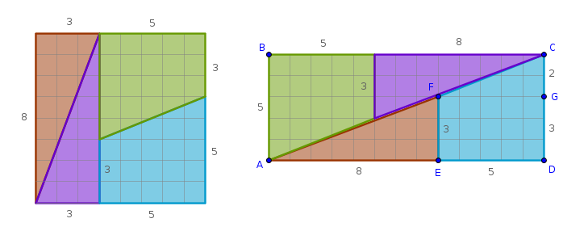
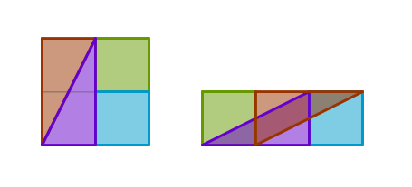
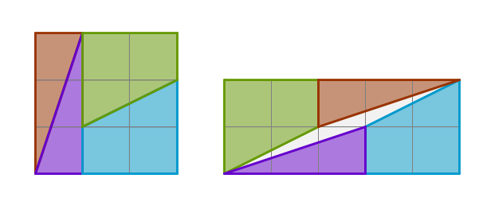

Problem
It is claimed that it is possible to rearrange four pieces comprising an \(8 \times 8\) square-ruled board in such a way that, allegedly, the same pieces form a \(5 \times 13\) rectangle:
Hence the paradox:
$$8 \times 8 = 64 = 65 = 5 \times 13$$How is this possible?
Solution I
is based on geometry since optical is always questionable.
Whether we are dealing with a one-, two- or three-dimensional figure the common sense tells us that there could only be three possible outcomes of any rearrangement of any parts making up the original whole. The new formation can only be:
Since the new formation has \(65\) square units while the original has \(64\), it follows that the new formation is larger than the original and it is our job to prove that it contains a hole somewhere.
The original board is cut into two pairs of congruent objects - two congruent right triangles and two congruent right trapezoids. We take that statement at its face value by assuming that it is true.
The new formation seems to be an \(ABCD\) rectangle made up of the same objects. However, for the new rectangle to be solid it must be comprised of two congruent right triangles, \(\triangle ABC\) and \(\triangle ADC\), each of which has one composite side and a common composite hypotenuse \(AFC\).
For a composite side \(AD\), for example, to be a straight line the angles at \(E\) and \(D\) must be the same - which they are. As such, we eliminate the composite sides of both triangles from our investigation.
The only other remaining composite object is the straight line \(AFC\). However, for the points \(A, F\) and \(C\) to be collinear the angles \(\angle EAF\) and \(\angle GFC\) must be equal.
Since the sides of the right triangles \(\triangle AEF\) and \(\triangle FGC\) are known, we can compute the angles in question as follows:
$$\tan(\angle EAF) = \frac {EF}{EA} = \frac {3}{8} = 0.375$$ $$\angle EAF = 20.556^{\circ}$$ $$\tan(\angle GFC) = \frac {GC}{GF} =\frac {2}{5} = 0.4$$ $$\angle GFC = 21.801^{\circ}$$ $$\angle EAF < \angle GFC$$We see that:
- the angles in question are not identical
- the points \(A, F\) and \(C\) are not collinear
- the new rectangle \(ABCD\) is not solid - it has a diamond-shaped hole along its diagonal with a square area of one unit
We conclude that there is no paradox after all and that, as expected:
$$64 \neq 65$$
Solution II
is based on Fibonacci numbers or Fibonacci sequence since these positive integers:
$$2, 3, 5, 8, 13$$are its first few terms.
The original claim that:
$$8 \times 8 = 64 = 65 = 5 \times 13$$can be recorded in terms of Fibonacci numbers then as follows:
$$\begin{equation} F_n \times F_n = F_{n - 1} \times F_{n + 1} \end{equation}$$where \(F_n\) stands for the \(n-\)th Fibonacci number for which we have the following definition:
$$\begin{equation} F_n = F_{n - 1} + F_{n - 2} \end{equation}$$which, coupled with the initial numbers \(F_0 = 0\) and \(F_1 = 1\), fully defines the sequence.
If we put (2) into the left hand side of (1) we will obtain:
$$\begin{equation} F_n^2 = F_n \times (F_{n - 1} + F_{n - 2}) = F_n \times F_{n - 1} + F_n \times F_{n - 2} \end{equation}$$To compute \(F_{n+1}\) we put \(n + 1\) into (2):
$$\begin{equation} F_{n + 1} = F_n + F_{n - 1} \end{equation}$$If we put (4) into the right hand side of (1) then we will obtain:
$$\begin{equation} F_{n - 1} \times F_{n + 1} = F_{n - 1} \times (F_n + F_{n - 1}) = F_n \times F_{n - 1} + F_{n - 1}^2 \end{equation}$$Since it is clear that (1) is not true, let us compute the difference between (5) and (3):
$$F_{n - 1} \times F_{n + 1} - F_n^2 =$$ $$F_n \times F_{n - 1} + F_{n - 1}^2 - F_n \times F_{n - 1} - F_n \times F_{n - 2} =$$ $$F_{n - 1}^2 - F_n \times F_{n - 2}$$or:
$$\begin{equation} D_n = F_{n - 1}^2 - F_n \times F_{n - 2} \end{equation}$$We shall now prove that:
$$\begin{equation} D_n = (-1)^1 \times D_{n-1} \end{equation}$$Let us substitute \(F_n\) from (2) into (6):
$$D_n = F_{n - 1}^2 - F_n \times F_{n - 2} =$$ $$F_{n - 1}^2 - (F_{n - 1} + F_{n - 2}) \times F_{n - 2} =$$ $$F_{n - 1}^2 - F_{n - 1} \times F_{n - 2} - F_{n - 2}^2 =$$ $$\begin{equation} F_{n - 1}\times (F_{n - 1} - F_{n - 2}) - F_{n - 2}^2 \end{equation}$$But from (2) for the (\(n - 1\))st Fibonacci number we have:
$$\begin{equation} F_{n - 1} = F_{n - 2} + F_{n - 3} \end{equation}$$Carry the \(F_{n - 2}\) term in (9) to the left hand side of the equation:
$$F_{n - 1} - F_{n - 2} = F_{n - 3}$$and substitute it back into (8):
$$D_n = F_{n - 1} \times F_{n - 3} - F_{n - 2}^2 =$$ $$-(F_{n - 2}^2 - F_{n - 1} \times F_{n - 3}) =$$ $$-(F_{(n - 1) - 1}^2 - F_{n - 1} \times F_{(n - 1) - 2}) =$$ $$(-1)^1D_{n - 1}$$what was required to prove.
Now if instead of applying the above logic to \(D_n\) we apply it to \(D_{n - 1}\) we will obtain:
$$D_{n - 1} = (-1)^1D_{n - 2}$$or:
$$D_n = (-1)^1D_{n - 1} =$$ $$(-1)^2D_{n - 2}$$It stands to reason that we can proceed in the above fashion until we come to \(D_1\):
$$D_n = (-1)^1D_{n - 1} =$$ $$(-1)^2D_{n - 2} =$$ $$(-1)^3D_{n - 3} =$$ $$\dots$$ $$(-1)^{n - 1}D_1$$But according to (6):
$$D_1 = F_0^2 - F_1 \times F_{-1} = 0 - 1 \times 1 = -1$$And hence:
$$\begin{equation} D_n = (-1)^n \end{equation}$$Known as Cassini Identity (10) means that the difference that we have set out to explore does not depend on the terms of the Fibonacci sequence but rather depends only on the parity of \(n\) which can be interpreted geometrically as follows:
- if \(n\) is even then the difference is equal to \(+1\) securing a gap in the rectangle \(ABCD\)
- if \(n\) is odd then the difference is equal to \(-1\) securing an overlap in the rectangle \(ABCD\)
Conclusion
By comparing the two solutions we conclude that even though both approaches solve the problem the geometry-based solution does not contain a recipe for generalization while the Fibonacci numbers-based solution does:
starting with \(n = 3\) it is always possible to cut the \(F_n \times F_n\) board into an \(F_{n - 1} \times F_{n + 1}\) rectangle in such a way that the difference between their square areas is equal to one
In our case \(8 = F_6, n = 6\) and since six is of even parity there is a gap in the rearranged rectangle.
For \(n = 3, F_3 = 2\) we have an overlap:
For \(n = 4, F_4 = 3\) we have a gap:
And so on.
\(\blacksquare\)